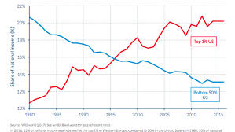

| Article Subjects |
|---|
| Industrial Economics |
Income Inequality |
Technological Changes and The Future of the Industries |
| A) What makes a merging process successful? |
B) The Emerging Economies and Income Inequality |
C) The Emerged and The Disappeared |
Contents:
- Exxon and Mobile Story and Motives
- Type of the Merger and Anti-trust Authorities
- Cost Synergies
- The effect of the merging behaviour to the merged firms
|
Contents:- Supply Shifts and the Labor Demand
- International Trade
- Technology and Skill Bias
- Labor Unions
|
Contents:- Technological Changes and Areas of Occupations
- U.S. Labor Market Data Analysis
- Negatively affected sectors by Technology
- Positively affected Sectors by Technology
|
A)WHAT MAKES A MERGING PROCESS SUCCESSFULL?
For detailed data you can visit Exxon and Mobil.In U.S. Exxon Corporation and Mobil, Corporation combination was announced on 12/01/1998 in a period when many major horizontal mergers took place in the oil industry. Before Exxon and Mobil corporations merge, Exxon had a market value of 175 billion$ and Mobil had 58.7 billion $ of market value. Before the merge, the equity value of Exxon shares represented 75% of the merged market value. Exxon’s financial net income was 8.5 billion $, it’s revenues was 137.2 billion$ and return on average capital employed was 16.5%, Mobil’s net income was 3.3 billion $, it’s revenues was 65.9 billion$ and return of average capital employed was 13.4%. Exxon’s capital and exploration expenditure were 8.8 billion$ and employees’ and administrative costs were 52.9 billion $. Mobil’s capital and exploration expenditure were 5.3 billion $ and it’s employees’ and administrative costs were 26.5 billion $. Both firms’ objective while doing that kind of action is trying to acquire a profit level which is higher than prior to the sum of the profits’ of both firms. During this period most new major oil reserves have been discovered outside of the U.S. which procreated a potential risk for these companies, with combining their forces they would have a much higher potential to discover new sources, so they will have a higher chance to enter new markets. Oil prices are also unstable and affected so much by politics and almost every event throughout the world, and if both firms come together they can absorb better any possible future damage which could come from price shocks. They will also be much stronger and they will have a more chance to be immune against price shocks of oil. Moreover, they would also have a higher chance to dominate the market, by merging they would market share and their market power by merging especially in Azerbaijan, Kazakhstan and U.S.
B)THE EMERGING ECONOMIES AND INCOME INEQUALITY
The income inequality increased over time in emerging economies because of the factors which causes some changes in both global and local economy and these changes have an impact on the increase in the income inequality espacially in emerging economies such as Russia. One factor is the supply shifts, of course the whole change could not be explained by the supply shifts but they also affect contributing income inequality since with the globalization of the economy low skilled workers started to immigrate to emerging economies to use the job opportunities. Immigration will cause a supply shift relative employment of skilled workers to the left since it drastically increase the number of low skill workers, also introduces new low skill workers who are willing to be paid lower amounts than prior low skill workers get paid, so it will cause a change in the wage distribution which is not in favor of low skill workers.
The second factor which leaded an increase in the income inequality is the international trade. With the globalization of the world’s economy international traded expanded drastically, so countries started to import and export more and more as each day passes. So if we look at a countries’ perspective the country which can be regarded as an emerging economy such as China, since the demand for Chinese products are increasing over time China is willing to export more and with the increase for demand for Chinese products it will increase the relative demand of skilled worker in China which will cause a shift of the demand curve of high skilled workers to right then it will increase high skill labor’s income level. Also as Chinese consumers increased their demand for foreign goods domestic firms’ would be less willing to employ unskilled workers. So in both situations which international trade caused, income inequality will become higher.
The third that I want to mention is the influence of technological products on the income inequality. With the technological change happening it will causes some changes in the way of firm’s producing goods and services if firm’s wanted to sustain their existence or maximize their profits. So firms in Russia need to adapt these technological changes and technology had an influence on the employer’s choice such with the introduction of developed data analysis software demand for high skill workers who become experts at data anylysis will increase since they become more productive with the software. On the other hand low skill workers may become substitutable with this software since their only mission is just recording. So simultenously relative demand for low skilled workers will decrease and relative deman for skilled workers will become higher.
C)The Emerged and The Disappeared
The income inequality increased over time in emerging economies because of the factors which causes some changes in both global and local economy and these changes have an impact on the increase in the income inequality espacially in emerging economies such as Russia. One factor is the supply shifts, of course the whole change could not be explained by the supply shifts but they also affect contributing income inequality since with the globalization of the economy low skilled workers started to immigrate to emerging economies to use the job opportunities. Immigration will cause a supply shift relative employment of skilled workers to the left since it drastically increase the number of low skill workers, also introduces new low skill workers who are willing to be paid lower amounts than prior low skill workers get paid, so it will cause a change in the wage distribution which is not in favor of low skill workers.
The second factor which leaded an increase in the income inequality is the international trade. With the globalization of the world’s economy international traded expanded drastically, so countries started to import and export more and more as each day passes. So if we look at a countries’ perspective the country which can be regarded as an emerging economy such as China, since the demand for Chinese products are increasing over time China is willing to export more and with the increase for demand for Chinese products it will increase the relative demand of skilled worker in China which will cause a shift of the demand curve of high skilled workers to right then it will increase high skill labor’s income level. Also as Chinese consumers increased their demand for foreign goods domestic firms’ would be less willing to employ unskilled workers. So in both situations which international trade caused, income inequality will become higher.
The third that I want to mention is the influence of technological products on the income inequality. With the technological change happening it will causes some changes in the way of firm’s producing goods and services if firm’s wanted to sustain their existence or maximize their profits. So firms in Russia need to adapt these technological changes and technology had an influence on the employer’s choice such with the introduction of developed data analysis software demand for high skill workers who become experts at data anylysis will increase since they become more productive with the software. On the other hand low skill workers may become substitutable with this software since their only mission is just recording. So simultenously relative demand for low skilled workers will decrease and relative deman for skilled workers will become higher.
The last factor that I want to mention about is labor the weakening of the labor unions. Since labor unions are very effective against raising the wage of low skill workers, when they become weaker it means that employer’s relative demand for low skill workers will decrease and it will cause an increase in the relative wage of skilled workers with shifting up the relative demand curve.
For more detailed information you can visit
here